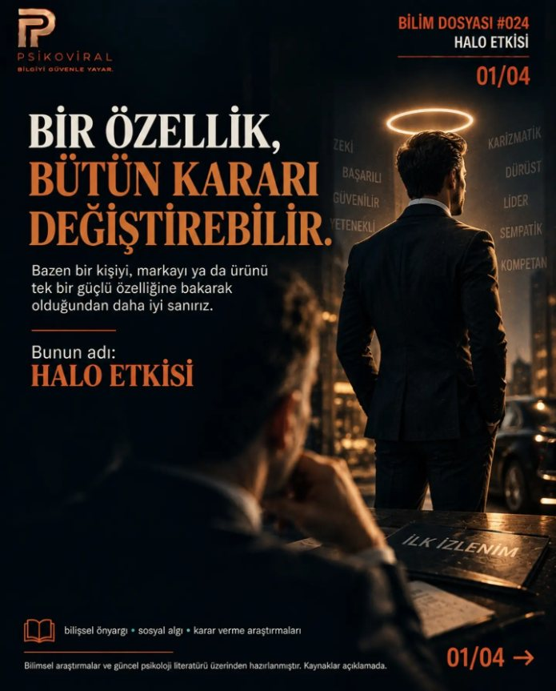

Kendini anlamanın
bir de bilimi var.
Duygularımız, kararlarımız, ilişkilerimiz.
Gündelik hayattan sorulara, araştırmaların ışığında yeni bir bakış.
 ÖNE ÇIKAN DOSYAOKUMA DOSYASI
ÖNE ÇIKAN DOSYAOKUMA DOSYASISevilmek istemek
zayıflık değildir.
Yakınlık ihtiyacına bilimsel bir bakış Bir soruyla başlarız.
Hayattan bir an, yaygın bir inanç, merak edilen bir soru.
Araştırmaya bakarız.
İddiaları, bilimsel çalışmaların bulgularıyla birlikte ele alırız.
Sınırını da söyleriz.
Ne biliniyor, ne belirsiz? İkisine de yer veririz.
Bir soruyla başla.
 Duygular
DuygularBirinin seni onaylamaması neden bütün gününü bozabiliyor?
Değerini başkalarının tepkisine bağladığında belirsizlik bile tehdit gibi hissedilebilir.
Dosyayı oku
DüşünmeHalo etkisi: Bir özellik bütün gerçek değildir
Tek bir olumlu özellik, bir insan ya da ürün hakkındaki bütün algımızı nasıl şekillendirir?
Dosyayı oku İş ve yaşam
İş ve yaşamHer yorgunluk tükenmişlik değildir
Tükenmişlik, yorgunluktan daha geniş bir örüntüdür ve yalnızca kişinin sorunu değildir.
Dosyayı oku
Dünya nasıl
yaşıyor?
Farklı coğrafyalar, farklı alışkanlıklar. Yaşam biçimlerini, sosyal bağları ve uzun yaşam iddialarını birlikte inceliyoruz.
İlk durak: Okinawa OKINAWA, JAPONYA BÖLÜM 01
OKINAWA, JAPONYA BÖLÜM 01Bir konu seç.
Yeni bir pencere aç.
Kaynağı görün.
Sınırını bilin.
Bir bulgu, bütün hikâye değildir. Dosyalarımızda araştırmaları, yorumları ve kanıtın sınırlarını birlikte sunuyoruz.
PSİKOVİRAL’i tanıyın